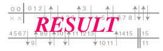

御覧になりたい年代を下の一覧から選んで下さい． 戦績のファイルはPDF形式となっております． PDFファイルはAdobe Acrobat Reader 4.0で御覧になってください． 年によっては戦績が不完全なものもございますが，ご了承下さい．
注意：Adobe Acrobat Reader 4.0をお持ちでない場合は，本CD-ROM内の「adobe」フォルダにあるインストールプログラムを実行してください．
1956年〜1960年の戦績
1961年〜1970年の戦績
1971年〜1980年の戦績
1981年〜1990年の戦績
1991年〜2000年の戦績